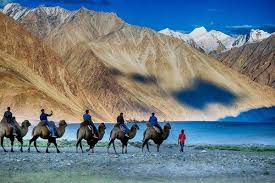
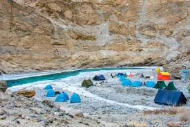

The land of high mountain passes, barren mountains, alpine lakes & meadows,
enchanting valleys and ancient colourful Buddhist monasteries,
Ladakh is one of the must-visit destinations in India.
It is ideal for adventure enthusiasts and nature lovers alike.
Ladakh is unlike any place to visit in India.
It is here that you can witness some of the world’s highest mountain passes as well as exotic wildlife species in India’s largest national park.
This must-visit destination in India is perfect for motorbiking and mountain biking, camping, river rafting, trekking and peak climbing adventures.
Price:30000 with bike

Top Places to Visit in Ladakh

Top Things to Do in Ladakh